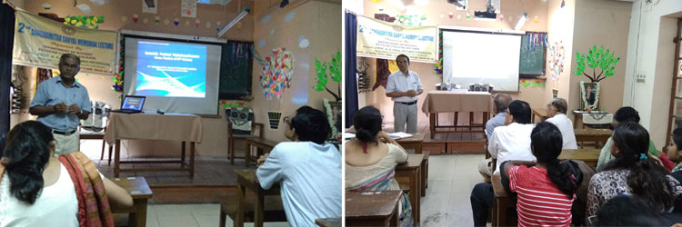
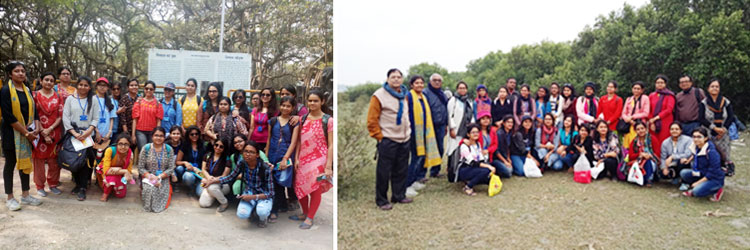
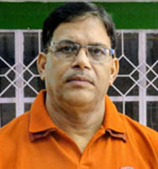
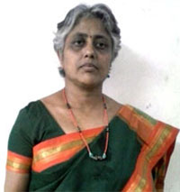
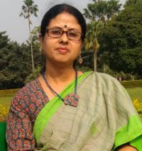

Department of Botany
Trees are the Earth's endless effort to speak to the listening heaven.
---Adapted from Rabindranath Tagore
|  |
|  |
About the Department
Botany has the distinction of being the first science subject to be taught in The Bethune College. Miss Hemaprova Bose, Head mistress of the collegiate school, took the responsibility of teaching the subject as lecturer during 1903-1914. The course was affiliated to the I.A. standard of the University of Calcutta (1918-19). Mrs. Sally Lewis joined this department in 1939 and subsequently became the Head of the combined departments of Botany and Biology. In 1958 the B.Sc. Pass classes in Botany, started. In 1960 the combined departments of Botany and Biology split into two distinct departments as Botany and Zoology and these were shifted to the new Science Building. Honours course in Botany started with three students in the year1961.
The Postgraduation course in Botany commenced in 2005 with 20 students under the ambit of University of Calcutta with three special papers Cytogenetics & Genomics; Plant Physiology & Biochemistry and Molecular Biology & Plant Biotechnology. From the session 2018-19 the PG course has been undertaken directly by the University of Calcutta.
Faculty
| Dr. Seemanti Ghosh Assistant Professor and HOD M.Sc.,Ph.D. |
 | Dr. Dipayan Chattopadhyay Associate Professor M.Sc.,Ph.D. |
 | Dr. Tripti Roy Associate Professor M.Sc., B.Ed., Ph.D. |
Dr. Debjani Sinha Ray Associate Professor M.Sc.,Ph.D. | ||
| Dr. Saswati Laha Assistant Professor M.Sc.,Ph.D. |
 | Dr. Sritama Mukherjee Assistant Professor M.Sc.,Ph.D. |
Dr. Smita Ray Assistant Professor M.Sc.,Ph.D. |
Infrastructure